Home › Theriogenology › Heat Detection in Cattle: Signs, Methods & Timing
Theriogenology · Reproduction & Breeding in Cattle
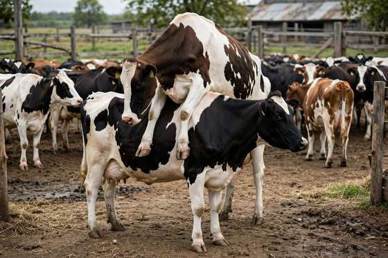
Standing heat — the only definite sign that a cow is ready for breeding
Heat detection is the single most important skill in cattle breeding. A cow comes into heat for only about 12 to 18 hours in each 21-day cycle, and if that short window is missed, the farmer waits another three weeks — losing milk, time and money. Even the best semen and the best inseminator cannot produce a pregnancy if the cow is bred at the wrong time.
This guide explains the estrous cycle, the primary and secondary signs of heat, the practical detection methods used on farms, the AM–PM rule for timing artificial insemination, and what to do when heats are silent or missing. It is written for dairy farmers, livestock owners and veterinary students.
Why Heat Detection Decides Conception Rates
Good heat detection is the foundation of herd fertility. When heats are detected accurately and insemination is timed correctly, conception rates improve, calving intervals shorten, and each cow produces more milk over her lifetime.
Missed heats cost money — every missed cycle adds about 21 days to the calving interval, with extra feeding costs and lost milk.
Wrong timing wastes semen — inseminating too early or too late sharply reduces the chance of conception.
Good detection means fewer empty cows — herds with strong heat detection have fewer cows that fail to conceive.
Records guide the whole breeding programme — knowing each cow's cycle makes it possible to predict her next heat.
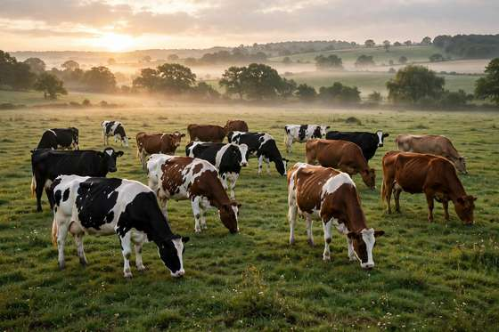
A healthy, well-observed herd is the basis of good fertility
The Estrous Cycle — About 21 Days
The estrous cycle of a cow averages about 21 days (range 18–24 days) and has four stages. Understanding the cycle helps the farmer predict when a cow will next come into heat.
1
Proestrus (Days 18–20)(The follicle grows on the ovary; the cow may begin to show early restlessness)
2
Estrus — Heat (Day 21 / Day 0)(The cow stands to be mounted; lasts about 12–18 hours; the only time she will accept mating)
3
Metestrus (Days 1–4)(Ovulation occurs about 10–14 hours after standing heat ends; the corpus luteum forms)
4
Diestrus (Days 5–17)(The longest stage; the corpus luteum is active and the cow shows no heat)
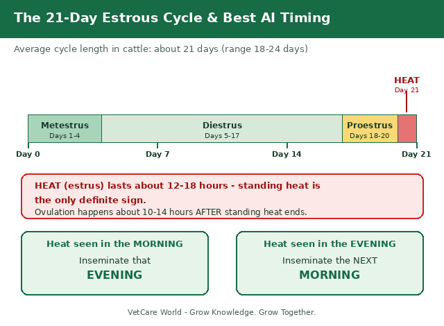
The 21-day estrous cycle — heat lasts 12–18 hours; time AI by the AM–PM rule
Heifers usually have slightly shorter cycles than mature cows. After calving, most cows return to cycling within a few weeks, although high milk yield, poor body condition and disease can delay the first heat.
The Primary Sign — Standing Heat
Standing to be mounted is the only definitive sign of heat. A cow in true estrus stands still, with her back slightly arched and her tail raised, and allows other cows to mount her. If a cow does not stand, she is not in true standing heat — no matter how many other signs she shows.
Standing heat usually lasts about 12 to 18 hours. In high-producing dairy cows, in hot weather, and in cows kept on slippery floors, it may be shorter and harder to see — which is why careful, regular observation matters so much.
Rule of thumb: if a cow stands to be mounted, she is in heat and should be recorded and bred according to the AM–PM rule. If she only shows secondary signs, watch her closely and check again at the next observation.
Signs of Heat
Secondary signs appear before, during and after standing heat. They are useful clues — especially when several appear together — but they do not confirm heat on their own.
1
Standing heat(The cow stands still and allows other cows to mount her — the only definite sign)
2
Mounting other cows(A cow in heat actively mounts her herd mates; herdmates may also mount her)
3
Clear mucus discharge(A clear, stringy, transparent discharge from the vulva, sometimes hanging in a long strand)
4
Restlessness and increased activity(The cow walks more, paces, sniffs other cows and is less interested in resting or eating)
5
Bellowing(Frequent, loud vocalisation, especially at night — a common sign in buffaloes too)
6
Swollen, reddened vulva(The vulva becomes swollen and moist, often with mucus; the tailhead may be dirty or ruffled from mounting)
Standing heat — the definite sign
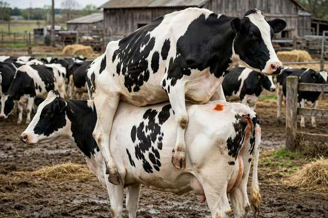
Mounting other cows
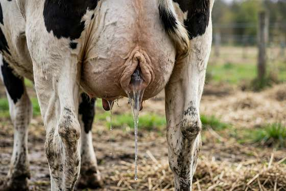
Clear mucus discharge
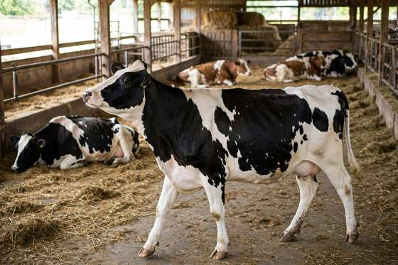
Restlessness, more walking
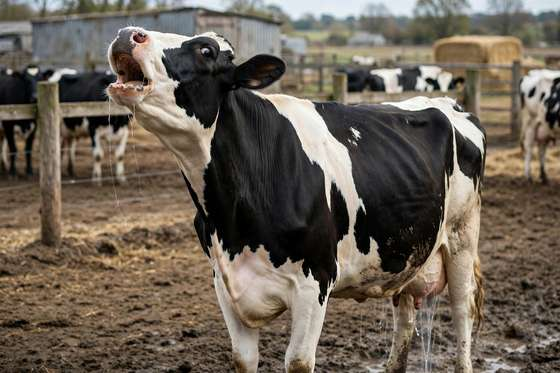
Bellowing
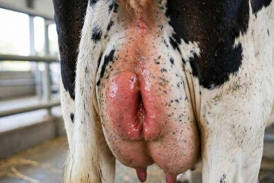
Swollen, reddened vulva
💡 Other clues to watch for:
Reduced appetite and a drop in milk yield on the day of heat
Chin resting and licking other cows, and sniffing their vulva region
Dirty or ruffled tailhead from being mounted during the night
Detection Methods
No single method catches every heat. The best results come from combining careful observation with one or more aids, plus good records.
Method
How it works
Strengths
Limitations
Visual observation
Watch the herd quietly at set times each day
Cheap; catches standing heat directly
Needs time and skill; heats at night are easily missed
Tail paint / chalk
Paint applied to the tailhead is rubbed off by mounting
Very cheap; works day and night
Can rub off on fences or trees; needs reapplying
Activity monitors / pedometers
A collar or leg sensor records increased walking and restlessness
Works 24 hours; catches night heats
Cost of equipment; needs some training to interpret
Teaser bull
A vasectomised or androgenised bull detects cows in heat
Very reliable detection
Cost and risk of keeping a bull; not practical for small farms
Breeding records
Previous heat dates predict the next heat (about 21 days later)
Free; focuses observation on the right cows
Only works if records are kept accurately
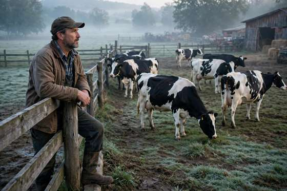
Observe quietly in the early morning and evening, when the herd is calm
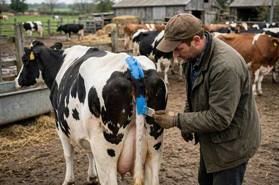
Tail paint — rubbed off by mounting
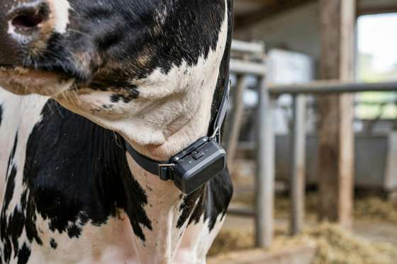
Activity monitors work day and night
💡 Best observation times:
Early morning — before feeding and milking, when cows are calm
Late evening — after the day's work, when mounting activity is highest
About 20–30 minutes each time — watch from a distance, without disturbing the herd
A third check at midday further improves detection, especially in summer
The AM–PM Rule and Timing of AI
Correct timing is everything: semen must be in the reproductive tract close to ovulation. Ovulation occurs about 10 to 14 hours after standing heat ends, so insemination is best done in the second half of heat.
The AM–PM rule:
Heat first seen in the morning (AM) → inseminate that evening (PM)
Heat first seen in the evening (PM) → inseminate the next morning (AM)
For the full procedure — semen handling, thawing, hygiene and the insemination technique — see our companion guide: Artificial Insemination in Cattle. After insemination, record the date and watch the cow again about 21 days later; if she does not return to heat, arrange a pregnancy check — see Pregnancy Diagnosis in Cattle: Ultrasound.
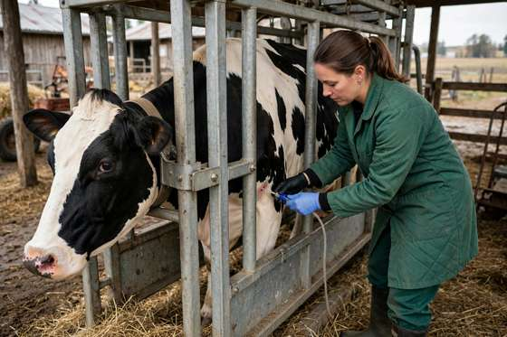
Inseminate by the AM–PM rule — timing decides conception
Silent Heat and Anoestrus
Sometimes a cow ovulates without showing clear signs — this is called silent heat. In anoestrus, the cow is not cycling at all. Both are common after calving and both need attention, because a cow that is not detected cannot be bred.
Common causes:
Poor body condition and negative energy balance after calving — the cow is using all her energy for milk
Heat stress in hot weather — heats become shorter and weaker
Lameness or slippery floors — the cow cannot or will not mount or stand
Uterine infection or ovarian problems after calving
Mineral deficiency and poor-quality feeding
Observation at the wrong times — heats shown at night are easily missed
What to do: improve feeding and body condition, provide shade and cool water in summer, keep floors non-slippery, and observe at the right times. If a cow has not shown heat by about 60 days after calving, ask a veterinarian to examine her ovaries by rectal palpation or ultrasound. Hormone treatments exist, but they must only be used as prescribed by a veterinarian after examination.
Record Keeping and Heat-Detection Rate Targets
Records turn guessing into a breeding programme. For every cow, record her calving date, every heat observed, every insemination, and every pregnancy result. With records, you can predict each cow's next heat (about 21 days after the last one) and focus your observation on the cows that are due.
Heat-detection rate target: a well-managed herd should detect at least 70% of heats; the best herds reach 80% or more.
Record every heat — date, time first seen, signs shown, and who observed it.
Mark the expected next heat on a calendar or breeding board — 21 days after the last heat.
Review records weekly — list cows due for heat, cows due for pregnancy checks, and cows that have not shown heat.
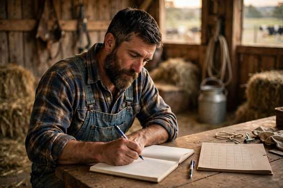
Good records predict the next heat — about 21 days later
Conclusion
Heat detection is a daily habit, not a one-time task. Know the 21-day cycle, recognise standing heat as the only definite sign, watch the herd quietly in the early morning and evening, use aids such as tail paint or activity monitors, keep accurate records, and time insemination by the AM–PM rule. With consistent observation, conception rates rise, calving intervals shorten, and the herd becomes more profitable.
References
Merck Veterinary Manual – Estrous Cycle and Estrus Detection in Cattle.
Senger, P.L. – Pathways to Pregnancy and Parturition (Current Conceptions, Inc.).
Noakes, D.E., Parkinson, T.J. & England, G.C.W. – Veterinary Reproduction and Obstetrics.
Penn State Extension – Heat Detection and Timing of Artificial Insemination.
University of Wisconsin–Madison Extension – Estrous Detection in Dairy Cattle.
Frequently Asked Questions
What is the most reliable sign of heat in cattle?
Standing to be mounted is the only definitive sign of heat in cattle. A cow in true estrus stands still and allows other cows to mount her. All other signs — mounting other cows, restlessness, mucus discharge, bellowing — are secondary signs that support the diagnosis but do not confirm it on their own.
How long does heat last in a cow?
Standing heat in cattle usually lasts about 12 to 18 hours, although it can be shorter in high-producing dairy cows and in hot weather. Because the window is short, cows should be observed at least twice a day — early in the morning and late in the evening — so that heats are not missed.
What is the AM–PM rule for insemination timing?
The AM–PM rule is the standard guide for timing artificial insemination: a cow first seen in heat in the morning (AM) should be inseminated that evening (PM), and a cow first seen in heat in the evening (PM) should be inseminated the next morning (AM). This timing places semen in the reproductive tract close to ovulation, which occurs about 10 to 14 hours after standing heat ends.
How often should cows be observed for heat?
Cows should be observed for heat at least twice a day, for about 20 to 30 minutes each time, in the early morning and late evening when the herd is calm and not being fed or milked. Adding a third observation, for example at midday, further improves detection. Good records of previous heats help predict when each cow is due to come into heat again.
What causes silent heat in cattle?
Silent heat means a cow ovulates without showing clear signs of estrus. Common causes include poor body condition and negative energy balance after calving, heat stress, lameness, slippery floors that discourage mounting, and observing the herd at the wrong times. A veterinarian can examine the ovaries by rectal palpation or ultrasound to confirm whether the cow is cycling, and can advise on feeding, housing and treatment.
My cow shows no heat after calving — what should I do?
First, check the basics: is she eating well, in good body condition, and free from lameness or disease? Many cows show weak heats that are easy to miss, so watch her carefully in the early morning and evening. If she has not shown heat by about 60 days after calving, ask a veterinarian to examine her — she may need treatment for a reproductive problem, or help with feeding and minerals. Do not use hormones without veterinary advice.
Can I use tail paint instead of watching my cows?
Tail paint is a useful aid, but it does not replace watching your cows. Paint rubbed off the tailhead shows that other cows have mounted her, which is a strong clue — but it can also be rubbed off by fences, trees or the cow herself. Use tail paint together with regular observation and good records for the best results.
گائے کے گرم ہونے (ہیٹ) کی علامات کیا ہیں؟
گائے کے گرم ہونے کی سب سے پکی علامت یہ ہے کہ وہ دوسری گایوں کو اپنے اوپر چڑھنے دیتی ہے اور کھڑی رہتی ہے۔ دوسری علامات میں دوسری گایوں پر چڑھنا، بے چینی، صاف لیس دار رطوبت کا نکلنا، بار بار آواز نکالنا، بھوک اور دودھ میں کمی اور فرج کا سوجنا شامل ہیں۔ گائے کو صبح سویرے اور شام کو غور سے دیکھیں تاکہ ہیٹ چھوٹ نہ جائے۔
Key Takeaway
Standing heat is the only definite sign — a cow that stands to be mounted is ready for breeding. Watch the herd in the early morning and evening, use tail paint or activity monitors as aids, keep accurate records, and time insemination by the AM–PM rule. If a cow shows no heat by about 60 days after calving, have her examined by a veterinarian. Follow current local veterinary authority guidance.